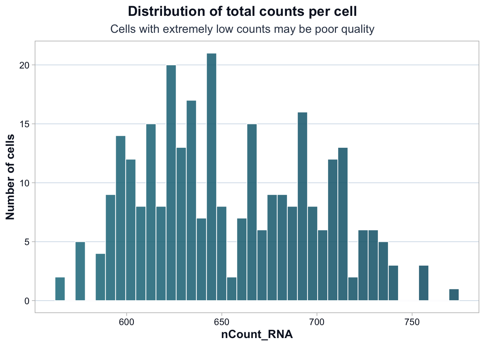
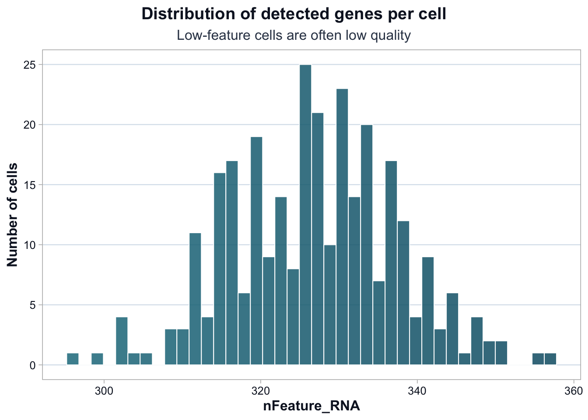
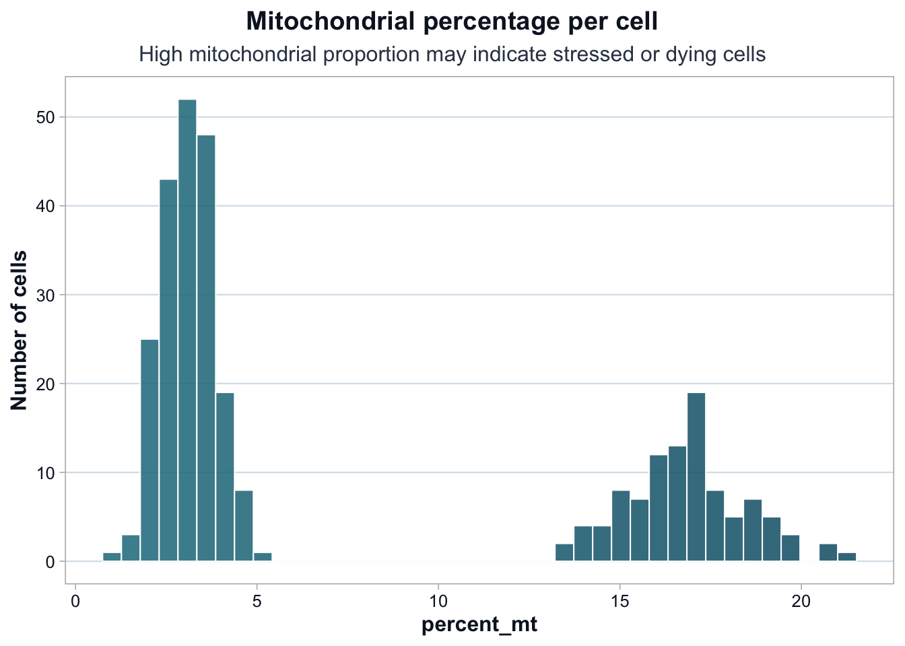

source("scripts/R/cdi-plot-theme.R")
library(ggplot2)
library(dplyr)
library(readr)Lesson 2: Data Structure and QC Metrics
Why Structure Comes First
Single-cell analysis does not begin with UMAP.
It begins with understanding:
- What rows represent (genes)
- What columns represent (cells)
- How metadata aligns with the count matrix
- What QC metrics measure
If structure is misunderstood, every downstream result becomes fragile.
Load Required Libraries
Load Demo Data
Make sure you have already generated the demo data:
source("scripts/R/cdi-single-cell-simulate-data.R")Now load the files.
counts <- read.csv("data/demo-counts.csv", row.names = 1)
metadata <- read.csv("data/demo-metadata.csv", stringsAsFactors = FALSE)
dim(counts)[1] 500 300dim(metadata)[1] 300 6Inspect the Counts Matrix
counts[1:5, 1:5] Cell1 Cell2 Cell3 Cell4 Cell5
MT-Gene1 4 0 0 8 0
MT-Gene2 7 0 1 6 0
MT-Gene3 6 0 0 5 0
MT-Gene4 8 0 2 1 1
MT-Gene5 7 0 2 2 1Interpretation:
- Rows are genes.
- Columns are cells.
- Values are raw counts.
- Counts are not normalized.
- Counts are not comparable across cells yet.
Inspect Metadata
head(metadata) cell_id cell_type_truth batch nCount_RNA nFeature_RNA percent_mt
1 Cell1 Type1 Batch1 615 319 18.536585
2 Cell2 Type2 Batch1 623 328 2.568218
3 Cell3 Type3 Batch1 628 335 2.547771
4 Cell4 Type1 Batch1 627 335 14.832536
5 Cell5 Type2 Batch1 613 314 2.283850
6 Cell6 Type3 Batch1 621 338 2.737520str(metadata)'data.frame': 300 obs. of 6 variables:
$ cell_id : chr "Cell1" "Cell2" "Cell3" "Cell4" ...
$ cell_type_truth: chr "Type1" "Type2" "Type3" "Type1" ...
$ batch : chr "Batch1" "Batch1" "Batch1" "Batch1" ...
$ nCount_RNA : int 615 623 628 627 613 621 622 629 598 600 ...
$ nFeature_RNA : int 319 328 335 335 314 338 325 324 321 331 ...
$ percent_mt : num 18.54 2.57 2.55 14.83 2.28 ...Key QC metrics:
nCount_RNA: total counts per cellnFeature_RNA: number of detected genespercent_mt: proportion of mitochondrial counts
Alignment Check
Counts columns must match metadata cell IDs.
all(colnames(counts) == metadata$cell_id)[1] TRUEIf FALSE, alignment must be fixed before proceeding.
Distribution of Total Counts (nCount_RNA)
ggplot(metadata, aes(x = nCount_RNA)) +
cdi_geom_histogram(bins = 40, colored = TRUE) +
cdi_scale_histogram_fill() +
labs(
title = "Distribution of total counts per cell",
subtitle = "Cells with extremely low counts may be poor quality",
x = "nCount_RNA",
y = "Number of cells"
) +
cdi_theme()
Improved Interpretation:
Most cells fall within a relatively narrow range of total counts.
There is no cluster of extremely low-count cells, which reduces the likelihood of empty droplets.
A modest right tail exists. This could represent: - Cells with genuinely higher RNA content - Potential doublets (two cells captured together)
At this stage, there is no justification to remove cells purely based on nCount_RNA.
QC thresholds should not be applied simply because they are common in tutorials.
Distribution of Detected Genes (nFeature_RNA)
ggplot(metadata, aes(x = nFeature_RNA)) +
cdi_geom_histogram(bins = 40, colored = TRUE) +
cdi_scale_histogram_fill() +
labs(
title = "Distribution of detected genes per cell",
subtitle = "Low-feature cells are often low quality",
x = "nFeature_RNA",
y = "Number of cells"
) +
cdi_theme()
Improved Interpretation:
The distribution is narrow and largely unimodal.
There is no obvious subpopulation of extremely low-feature cells.
This suggests that technical dropout is not dominating the dataset.
Higher-feature cells could reflect: - Larger or more transcriptionally active cells - Doublets - Or specific biological states
Again, no immediate filtering decision is justified.
Mitochondrial Percentage (percent_mt)
ggplot(metadata, aes(x = percent_mt)) +
cdi_geom_histogram(bins = 40, colored = TRUE) +
cdi_scale_histogram_fill() +
labs(
title = "Mitochondrial percentage per cell",
subtitle = "High mitochondrial proportion may indicate stressed or dying cells",
x = "percent_mt",
y = "Number of cells"
) +
cdi_theme()
Improved Interpretation:
The mitochondrial percentage shows clear bimodality.
One group of cells has low mitochondrial content (~2–4%), while another shows substantially higher values (~14–18%).
This pattern suggests: - Either a stressed cell subpopulation - Or a batch-driven difference
Before filtering, we must check:
- Is high percent_mt enriched in one batch?
- Does removing these cells remove a biological cluster?
- Are these cells coherent in downstream PCA space?
Blindly applying a “5% mitochondrial cutoff” would eliminate an entire subpopulation.
QC Decisions Should Be Tested
QC filtering is a hypothesis.
Before applying thresholds, test whether:
- High percent_mt cells cluster together
- They are enriched in a specific batch
- They align with a specific cell type
If filtering removes a coherent biological signal, it may be inappropriate.
QC is not about cleaning data until it looks nice.
It is about controlling technical noise while preserving biological structure.
What This Lesson Established
You now understand:
- The structure of a single-cell count matrix
- The role of metadata
- Core QC metrics
- Why QC thresholds require reasoning, not memorization
Next, we move to normalization and feature selection.